פשוט להצליח במתמטיקה › כל הנושאים › זוויות
זוויות – סרטוני הסבר ותרגול
30 סרטוני הסבר ותרגול בנושא זוויות – לכיתה ז׳, כיתה ח׳. כל נושא מוסבר מהקל אל הקשה: קודם הרעיון, אחר כך תרגילים, ובסוף שאלות בסגנון בגרות. הכול בחינם, בשיטת "פשוט להצליח".
רוצים לעקוב אחרי ההתקדמות?נרשמים בחינם, וכל סרטון שראיתם מסומן ✓. ממשיכים מכל מכשיר.
הצטרפות בחינם ←זוויות – כיתה ז׳ כל הנושאים של כיתה ז׳ ←
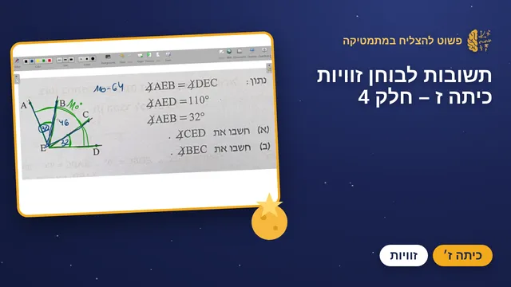
תשובות לבוחן זוויות כיתה ז – חלק 4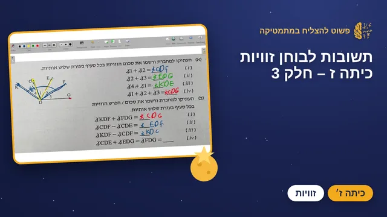
תשובות לבוחן זוויות כיתה ז – חלק 3 תשובות לבוחן זוויות כיתה ז – חלק 2
תשובות לבוחן זוויות כיתה ז – חלק 2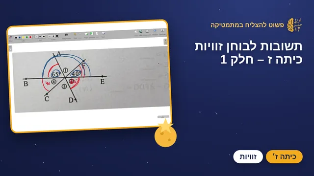
תשובות לבוחן זוויות כיתה ז – חלק 1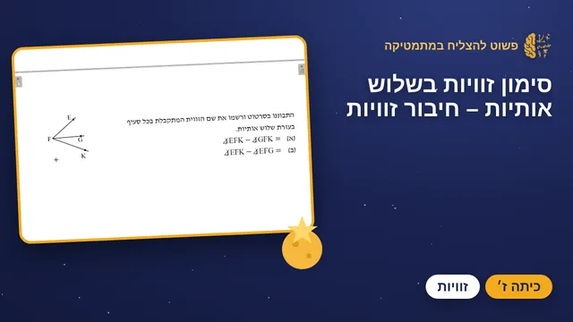
סימון זוויות בשלוש אותיות – חיבור זוויות זוויות סביב נקודה – ישרים נחתכים
זוויות סביב נקודה – ישרים נחתכים זוויות קודקודיות וצמודות – תרגיל קצר
זוויות קודקודיות וצמודות – תרגיל קצר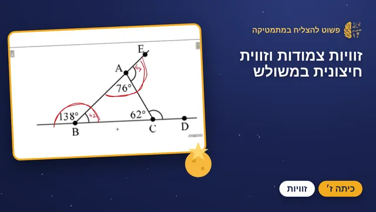
זוויות צמודות וזווית חיצונית במשולש זוויות בין ישרים מקבילים – מתאימות, מתחלפות וחד צדדיותמבוא לזוויות – סימון זווית בשלוש אותיות
זוויות בין ישרים מקבילים – מתאימות, מתחלפות וחד צדדיותמבוא לזוויות – סימון זווית בשלוש אותיות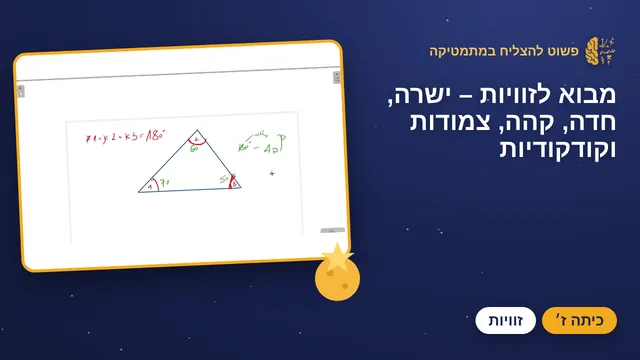
מבוא לזוויות – ישרה, חדה, קהה, צמודות וקודקודיות ישרים נחתכים בנקודה – חישוב זוויות קצר
ישרים נחתכים בנקודה – חישוב זוויות קצר חישוב זוויות בשרטוט משמאל קצר
חישוב זוויות בשרטוט משמאל קצר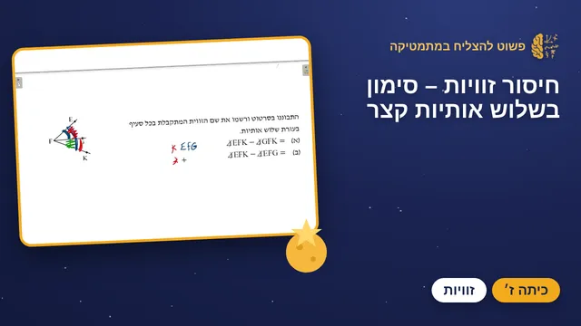
חיסור זוויות – סימון בשלוש אותיות קצר חוצה זווית וחישוב זוויות – תרגילים
חוצה זווית וחישוב זוויות – תרגילים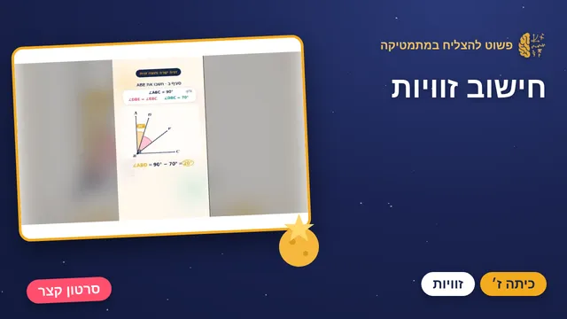
חישוב זוויות · סרטון קצר חישוב זוויות – תרגיל נוסף · סרטון קצר
חישוב זוויות – תרגיל נוסף · סרטון קצר מחברים ומחסרים זוויות · סרטון קצר
מחברים ומחסרים זוויות · סרטון קצר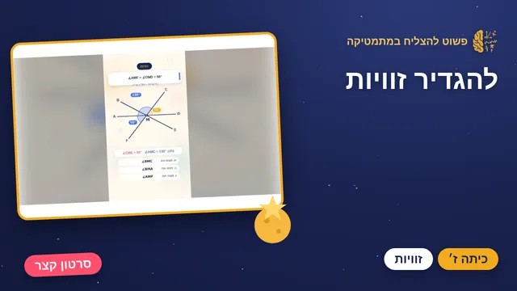
להגדיר זוויות · סרטון קצר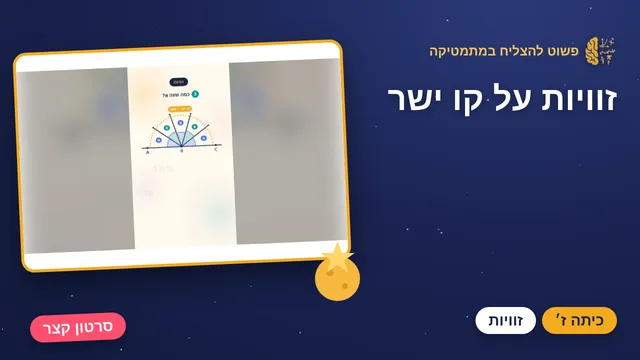
זוויות על קו ישר · סרטון קצר תרגול זוויות קודקודיות וזוויות צמודות · סרטון קצר
תרגול זוויות קודקודיות וזוויות צמודות · סרטון קצר תרגול זוויות קודקודיות וזוויות צמודות 2 · סרטון קצרזוויות צמודות וזוויות קודקודיות – תרגילים נוספים · סרטון קצרסוגי זוויות · סרטון קצר
תרגול זוויות קודקודיות וזוויות צמודות 2 · סרטון קצרזוויות צמודות וזוויות קודקודיות – תרגילים נוספים · סרטון קצרסוגי זוויות · סרטון קצרזוויות – כיתה ח׳ כל הנושאים של כיתה ח׳ ←
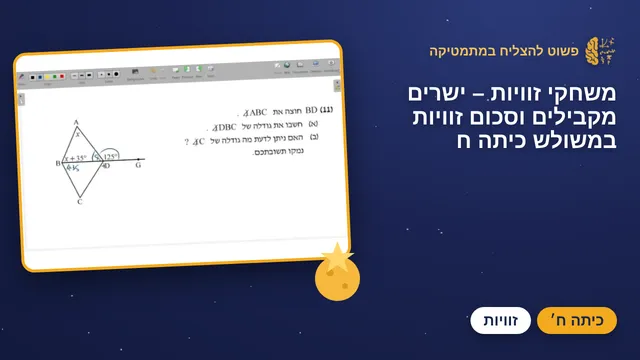
משחקי זוויות – ישרים מקבילים וסכום זוויות במשולש כיתה ח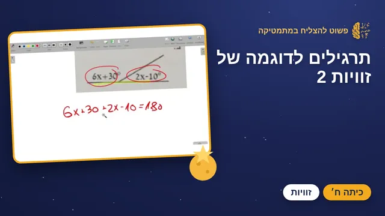
תרגילים לדוגמה של זוויות 2 הסבר זוויות – הכל כולל ישרים מקבילים כיתה ח
הסבר זוויות – הכל כולל ישרים מקבילים כיתה ח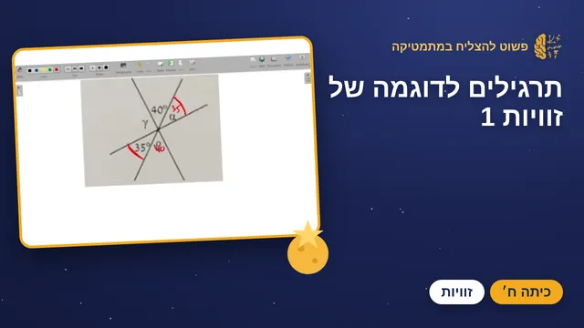
תרגילים לדוגמה של זוויות 1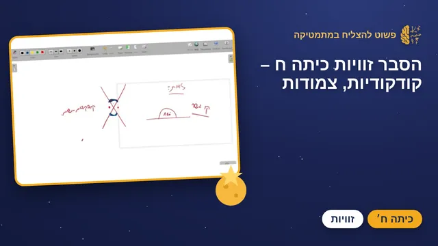
הסבר זוויות כיתה ח – קודקודיות, צמודות תרגילים לדוגמה – זוויות, תרגילי התחלה כיתה ח
תרגילים לדוגמה – זוויות, תרגילי התחלה כיתה ח